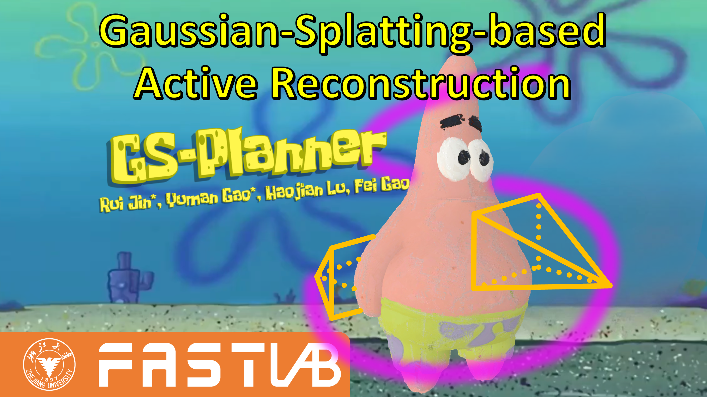
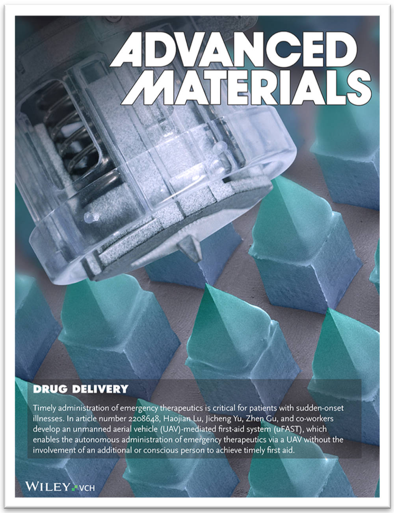
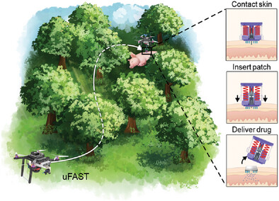
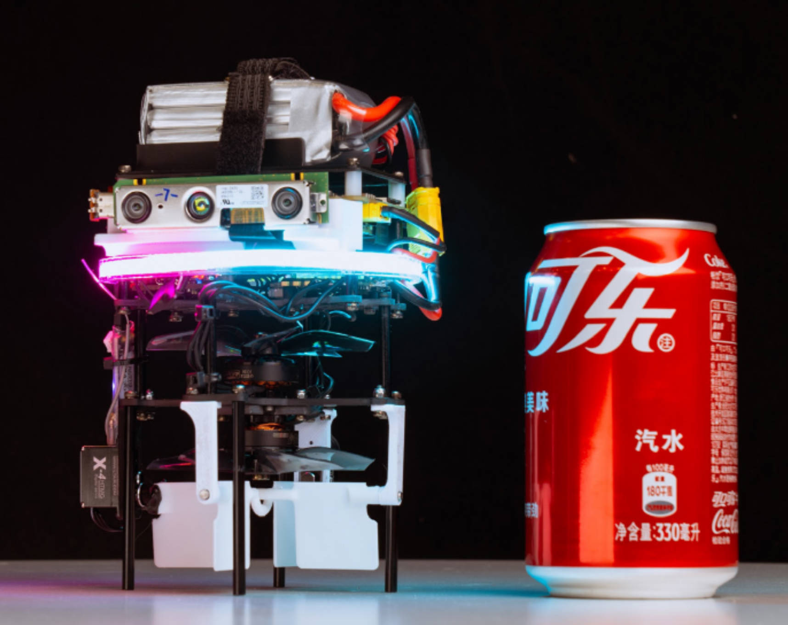
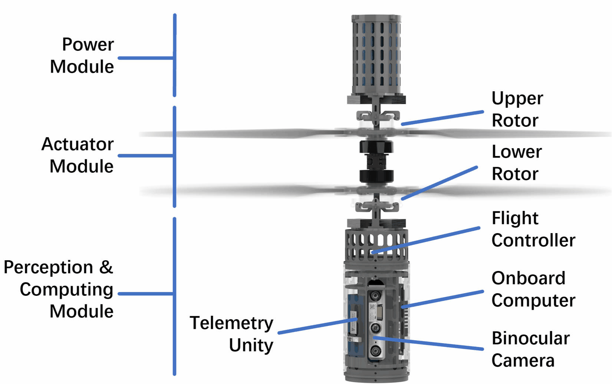
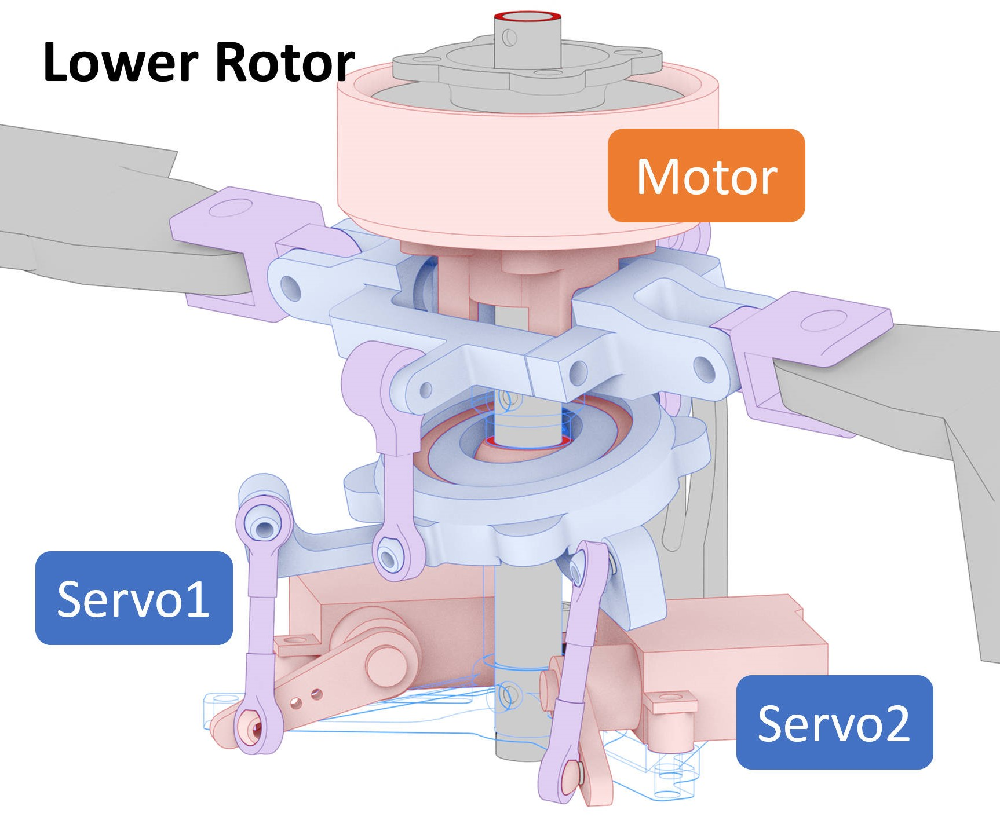
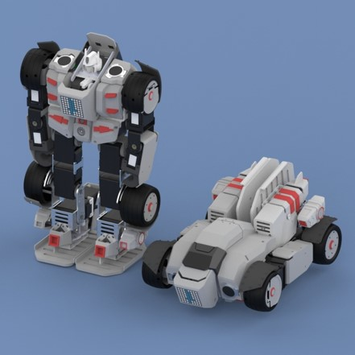
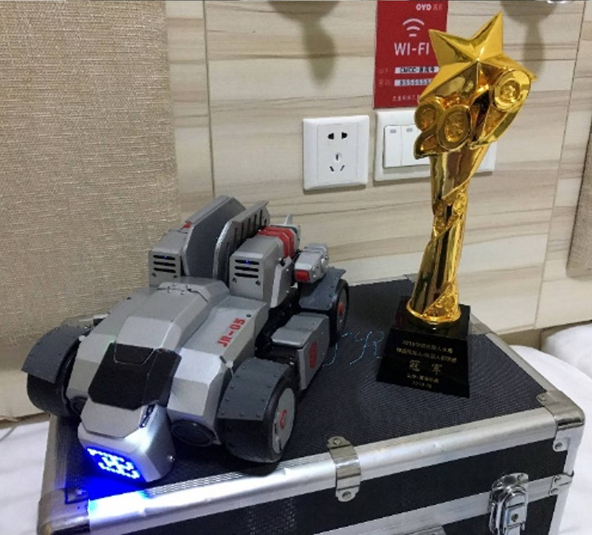
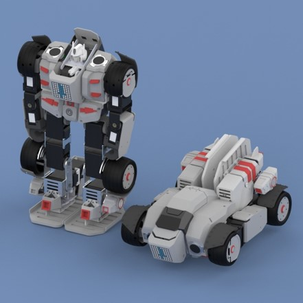
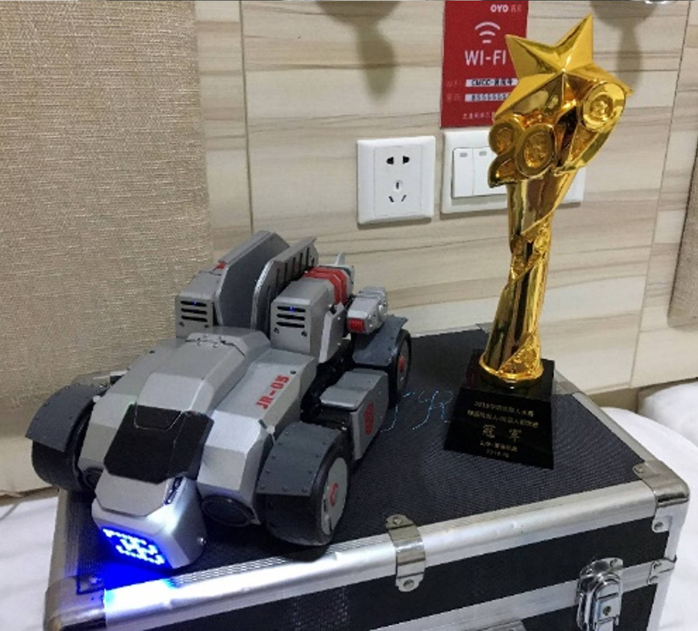

Rui JIN
Welcome! I am pursuing my M.Eng. in Control Science and Engineering at Zhejiang University, where I am co-supervised by Prof. Fei GAO and Prof. Haojian LU. I obtained my B.Eng. in Mechanical Engineering at Northwestern Polytechnical University. My research interests primarily lie in aerial robotics and autonomous navigation.
Publications
- GS-Planner: A Gaussian-Splatting-based Planning Framework for Active High-Fidelity Reconstruction
Rui Jin*, Yuman Gao*, Haojian Lu, Fei Gao
Accepted by IROS 2024 | pdf | video | arxiv

- Unmanned Aerial Vehicle Mediated Drug Delivery for First Aid
Sheng Tao*, Rui Jin*(co-first author), et al, Fei Gao, Yuqi Zhang, Haojian Lu, Jicheng Yu, Zhen Gu
Advanced Materials 2023 (Frontispiece Paper, IF:27.4)| pdf | paper
 
- Canfly: A Can-Sized Autonomous Mini Coaxial Helicopter
Neng Pan, Rui Jin, Chao Xu, Fei Gao
IROS 2023 | pdf | paper | video


Other Publications
- Adaptive Tracking and Perching for Quadrotor in Dynamic Scenarios
Yuman Gao, Jialin Ji, Qianhao Wang, Rui Jin, Yi Lin, Zhimeng Shang, Shaojie Shen, Chao Xu, Fei Gao
T-RO 2023 | pdf | paper | video
- Modeling and Force Control of a Variable-Length Continuum Robot with Variable Stiffness for Minimally Invasive Surgery
Jingyu Zhang, Qin Fang, Lilu Liu, Rui Jin, Pingyu Xiang, Rong Xiong, Yue Wang, Haojian Lu
T-ASE 2024 | pdf | paper
- Soft Lightweight Small-Scale Parallel Robot With High-Precision Positioning
Qin Fang, Jingyu Zhang, et al, Rui Jin (5th), Yue Wang, Rong Xiong, Zhefeng Gong, Haojian Lu
T-MECH 2023 | pdf | paper
- A Survey on Design, Actuation, Modeling, and Control of Continuum Robot
Jinyu Zhang, Qin Fang, et al, Rui Jin (6th), Ke Qiu,Yue Wang, Rong Xiong, Haojian Lu
Cyborg and Bionic Systems 2022 (IF: 10.7) | pdf | paper
Projects
- Design and Control of a Coaxial Helicopter
- Neural Collision Field for Efficient Trajectory Optimization for Mobile Robots
- Transformer Robot
Dec 2020-Nov 2023
Master's Thesis, collaborated with Prof. Ximin Lyu's group



Applications:


Jan 2023-Present
Ongoing Project

Jun 2018-Jun 2019
China Robot Competetion & National Training Program of Innovation for Undergraduates
 



Awards